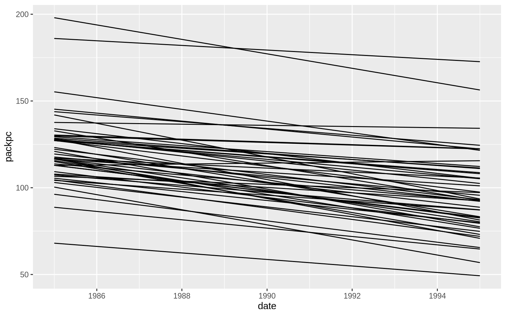
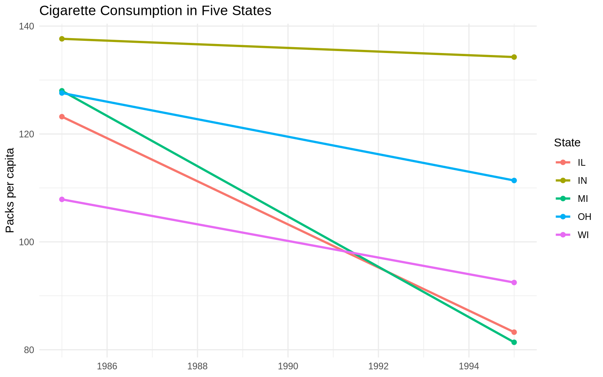
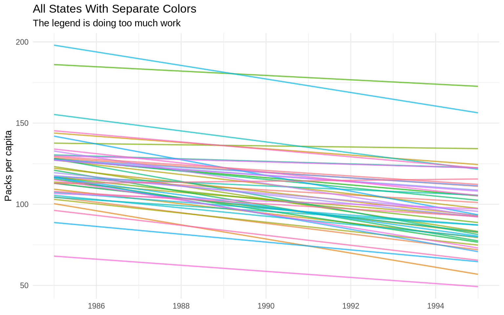
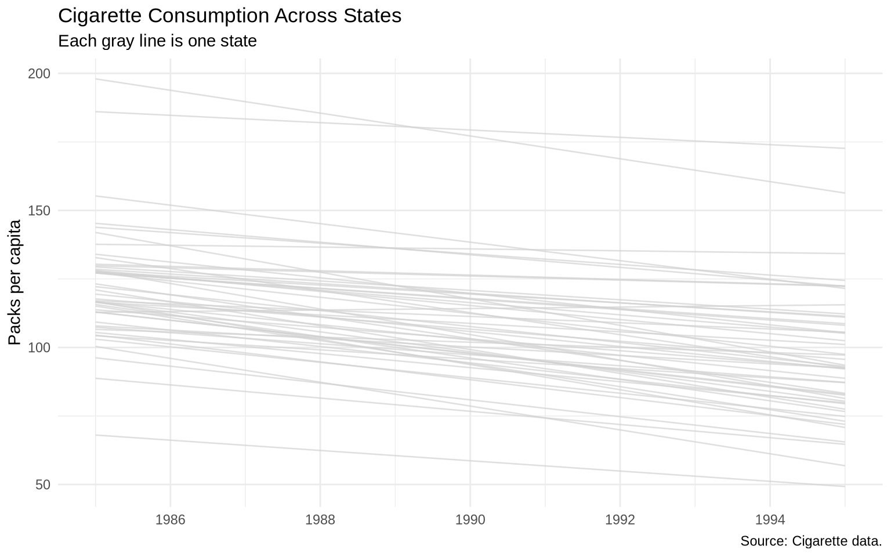
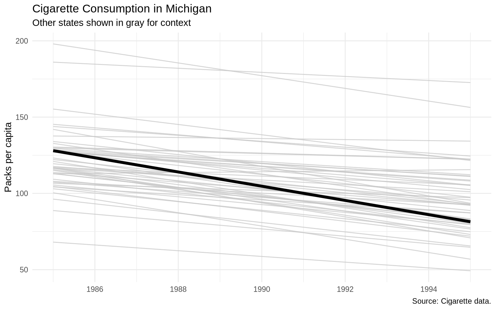

A finished figure usually comes from a sequence of smaller decisions. This chapter walks through one applied workflow:
State a question.
Inspect the data.
Make a rough plot.
Identify what is unclear.
Revise the data transformation.
Revise the plot.
Add labels, scales, and annotation.
Export the result when it is ready.
The goal is not to jump directly to a polished chart. The goal is to make each revision solve a specific problem.
Several of the individual techniques in this workflow — highlighting one line against gray context, adding a direct label, and building a benchmark — were introduced in Chapter 7. They appear here inside a sustained applied lab so the decisions accumulate into one finished figure.
8.2 Question
We will use state-level cigarette consumption data.
The working question:
How did cigarette consumption change over time across U.S. states, and where does Michigan fit relative to the broader pattern?
That question suggests a line chart because we are comparing change over time.
8.3 Inspect the data
The function glimpse() comes from dplyr, which is loaded as part of the tidyverse.
Start with the simplest plot that matches the question.
ggplot(data = cigarettes, mapping =aes(x = date, y = packpc, group = state)) +geom_line()

This plot is useful because it confirms that the data can be drawn as state-level time series. It is not yet a good final figure. It has no labels, too much visual weight on every state, and no clear focal comparison.
8.5 Check one state first
Before improving the full plot, isolate one state. A one-state plot is not the final answer, but it is easier to inspect.
This confirms that Michigan declines across the observed years. The next question is whether that decline is unusual.
8.6 Compare a small set of states
A small comparison set is often a good intermediate step. It is more informative than one state but less crowded than all states.
comparison_states <-c("MI", "IL", "IN", "OH", "WI")cigarettes |>filter(state %in% comparison_states) |>ggplot(aes(x = date, y = packpc, color = state)) +geom_line(linewidth =1) +geom_point(size =1.8) +scale_x_date(date_breaks ="2 years", date_labels ="%Y") +labs(title ="Cigarette Consumption in Five States",x =NULL,y ="Packs per capita",color ="State" ) +theme_minimal()

This version makes individual states easier to follow, but it does not show how these states compare with the entire country.
8.7 Try color on all states
Coloring every state is usually a bad idea, but trying it is instructive. It shows why the final figure should not use a 48-state legend.
ggplot(data = cigarettes, mapping =aes(x = date, y = packpc, color = state)) +geom_line(alpha =0.7, linewidth =0.7) +scale_x_date(date_breaks ="2 years", date_labels ="%Y") +labs(title ="All States With Separate Colors",subtitle ="The legend is doing too much work",x =NULL,y ="Packs per capita",color ="State" ) +theme_minimal() +theme(legend.position ="none")

The colors make the plot noisier without making the comparison clearer. This is a useful failed draft.
8.8 Build gray context with labels
If every state is context, the context should be visible but quiet. Thin gray lines are a good default. At the same time, the plot needs enough labels to be readable outside the code file.
p_all_states <-ggplot(data = cigarettes, mapping =aes(x = date, y = packpc, group = state)) +geom_line(color ="gray82", alpha =0.7, linewidth =0.45) +scale_x_date(date_breaks ="2 years", date_labels ="%Y") +labs(title ="Cigarette Consumption Across States",subtitle ="Each gray line is one state",x =NULL,y ="Packs per capita",caption ="Source: Cigarette data." ) +theme_minimal()p_all_states

This version is readable enough for exploration, and it creates room for emphasis. It still does not answer the Michigan comparison clearly.
8.9 Highlight one state
Apply the manual highlight pattern from Chapter 7 (gray context lines plus a heavier focal line) and save the result as a plot object so later revisions can be layered on top of it.
p_michigan <-ggplot(data = cigarettes, mapping =aes(x = date, y = packpc, group = state)) +geom_line(color ="gray78", alpha =0.75) +geom_line(data = cigarettes |>filter(state =="MI"),color ="black",linewidth =1.6 ) +scale_x_date(date_breaks ="2 years", date_labels ="%Y") +labs(title ="Cigarette Consumption in Michigan",subtitle ="Other states shown in gray for context",x =NULL,y ="Packs per capita",caption ="Source: Cigarette data." ) +theme_minimal()p_michigan

8.10 Add points only where they help
Points can show the actual observations, but adding points to every state creates clutter. Add them only to the focal state.
The important arguments are the filename, plot object, dimensions, and resolution. For a paper or slide deck, decide the intended size before exporting.
8.15 Checklist for final figures
Before treating a figure as final, check:
Does the title describe the main comparison?
Are the axes labeled in ordinary language?
Are units visible?
Is the source named?
Is color doing data work, emphasis work, or unnecessary decoration?
Is a legend necessary, or would direct labels be clearer?
Would a reader know what to look at first?
8.16 Exercise
Build a final figure from the same data.
Choose a state other than Michigan.
Create a line chart that highlights that state.
Add all other states in gray.
Add the average state line as a benchmark.
Directly label the highlighted state.
Write a two-sentence caption that explains the comparison.
# Write your workflow here.
8.17 Extra: summarize total change
Sometimes a line chart is not enough. A related question is which states changed the most from the first year to the last year.
The function pivot_wider() comes from tidyr, which is loaded as part of the tidyverse. Here it puts the first and last years into separate columns so the change can be calculated directly.